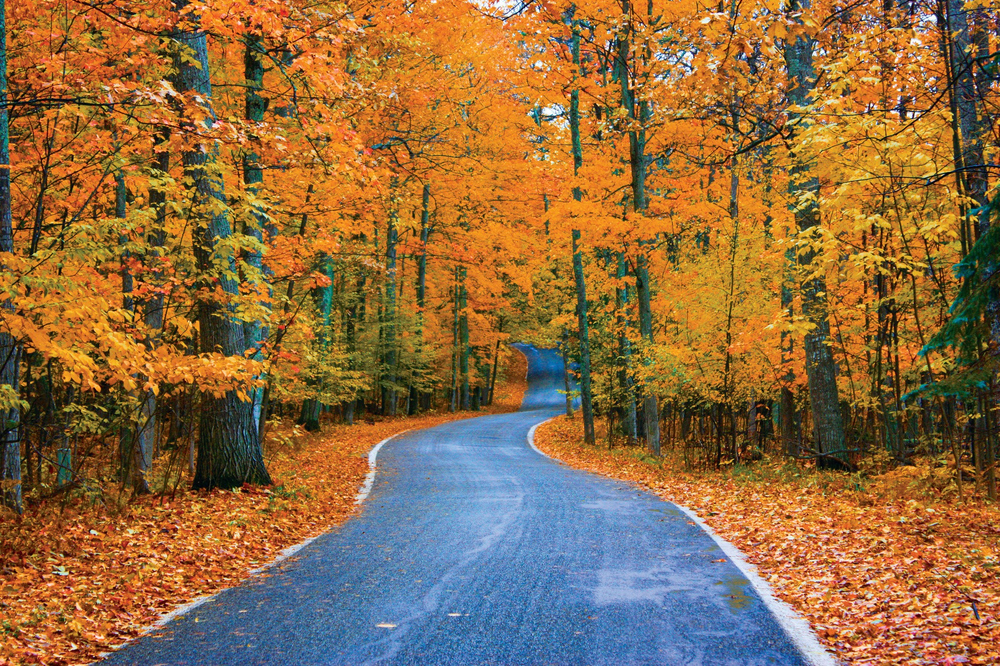
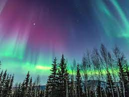
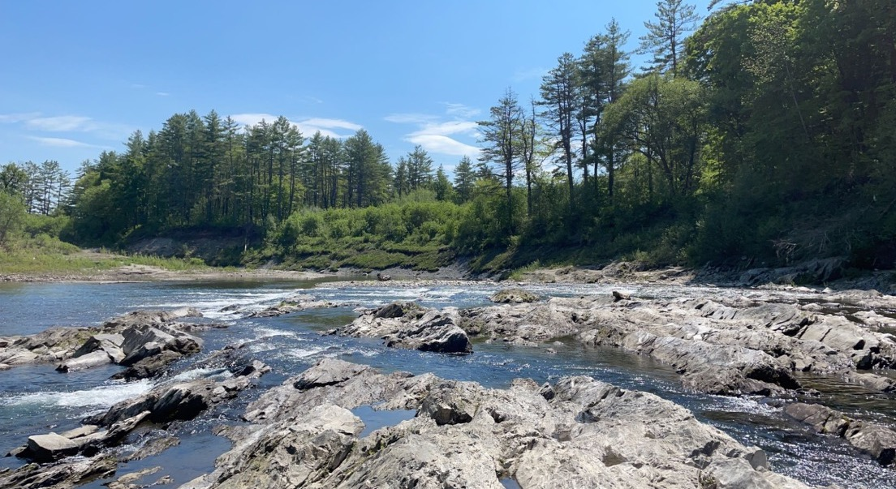
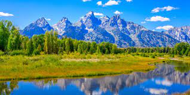
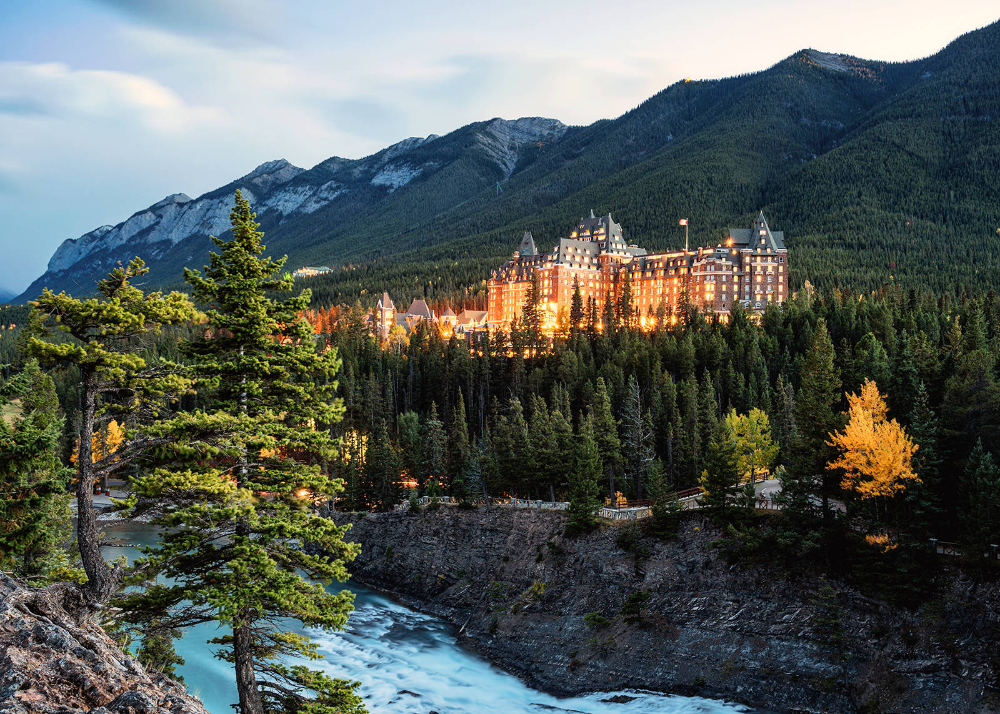

Weather
The weather varies depending on where you go and the time of year but I definitely tend to prefer warmer locations than cold, after living in Michigan my whole life. I indicated the most optimal time to visit each place so you can plan your visits accordingly. I got this information from my own experiences and visiting a travel site (travel.usnews.com).
United States
Northern Michigan-
The best time to visit Up North Michigan is definitely the summer (June-August) for the warmest temperatures and to be able to enjoy the beaches. Visiting during the fall is also a wonderful experience to see the beautiful fall foliage and trees changing color. If you are a skier/snowboarder, you can also visit in the winter for some slopes. I prefer the summertime and try to go every year because it just feels so relaxing.

Torrey Pines State Park, San Siego-
Visiting in March-May and Septempber-December are the best times for San Diego and to go hiking at this national park. I went in December and the weather was about 70 degrees F and absolutely phenomenal.
Alaska-
June-August is the warmest time of the year in Alaska and the best time to get the most daylight.

Hawaii-
Online it says the best time to visit Hawaii is from March-September and that may be due to off-peak times or some other factor like low rain and nice temperatures. I personally visited towards the end of December/beginning of January and let me tell you.. it was PERFECT. The weather is nice year round, but when I say perfect I genuinely mean it was perfect. Go whenever you can, but check to see if the forecast calls for rain or not.
Vermont-
The best time to visit Vermont is springtime like May to June for maple syrup season and to avoid tick season. I went in late May and the weather was beautful and warm and sunny. I was stunned by the amount of trees so visiting in Early Fall could be nice too in order to see the foliage.

Wyoming-
I haven't been to Wyoming so I can't speak from personal experience, but according to my online source it appears that it is good to go in late spring to see baby animals. For good temperatures, they recommend traveling their from April to June and early fall for nice, mild temperatures.

World
Banff-
The best time to visit Banff is from June-August for hikers looking for good weather and December-March for skiers looking for more snowy peaks.

Africa-
It is best to visit Africa during the dryer months or winter. These times are usually May to September so a summer trip would be good.
Italy-
Visiting Italy is nice in the spring and the fall for good, ideal temperatures and for less crowds.
Greece-
For Greece, late spring, summer and early fall are apparently the best times to plan your visit so think about times between May and September.
 Italy-
Visiting Italy is nice in the spring and the fall for good, ideal temperatures and for less crowds.
Greece-
For Greece, late spring, summer and early fall are apparently the best times to plan your visit so think about times between May and September.
Italy-
Visiting Italy is nice in the spring and the fall for good, ideal temperatures and for less crowds.
Greece-
For Greece, late spring, summer and early fall are apparently the best times to plan your visit so think about times between May and September.